Do third-party frontier AI evaluations matter?
Safety institutes and independent evaluators test frontier models, find problems, and publish them. That is the visible half of an accountability chain. This measures the other half — whether the company named in a finding ever answers it.
When no answer comes, nothing in the public record closes the loop. The finding stands, the model stays deployed, and no outside party can tell whether the risk was addressed, judged unimportant, or simply missed. More on the problem →
Table view
of significant-risk findings that name a company have no documented public response.
Every finding in the accountability set gets one verdict: proportionality — did the response match the risk? It is computed from two inputs, each measured separately before they are combined, and the combination is a fixed lookup with no discretion at any point.
Input 1 · Severity — how serious is the finding?
Each finding is scored against eight dangerous-capability domains by three independent models — Claude Sonnet 5, GPT-5.5 and Gemini 3.1 — using one frozen prompt sent to all three. Majority vote decides.
- Category 1
- Significant risk. At least one of the eight domains is demonstrated: CBRN uplift · cyber operations · autonomy and self-replication · persuasion at scale · deceptive alignment · safeguard failure · evaluation integrity · acute individual harm.
- Category 2
- Lower risk. Everything else — reassuring nulls, capability gaps, methodology contributions, governance observations, non-frontier models.
Input 2 · Action level — what did the company publish?
The same five sources are checked for every finding. Only the company's own primary document counts — news reporting that quotes a company is not a response, and standing policy that shares a topic does not count.
- Substantive
- A specific, documented change, attributed to the finding.
- Partial
- A change claimed but not verifiable, or incomplete.
- Acknowledged
- The finding is referenced, but no action follows.
- None
- Nothing located after all five sources were checked and logged.
The two combined — the proportionality matrix
A significant-risk finding needs a substantive response to pass. A lower-risk finding needs at least a partial one. The same company behaviour therefore scores differently depending on what it was answering.
| Severity | What the company published | Outcome |
|---|---|---|
| Category 1 — significant risk | Substantive | Proportionate |
| Category 1 — significant risk | Partial | Under-response |
| Category 1 — significant risk | Acknowledged | Under-response |
| Category 1 — significant risk | None | Accountability gap |
| Category 2 — lower risk | Substantive | Proportionate |
| Category 2 — lower risk | Partial | Proportionate |
| Category 2 — lower risk | Acknowledged | Under-response |
| Category 2 — lower risk | None | Accountability gap |
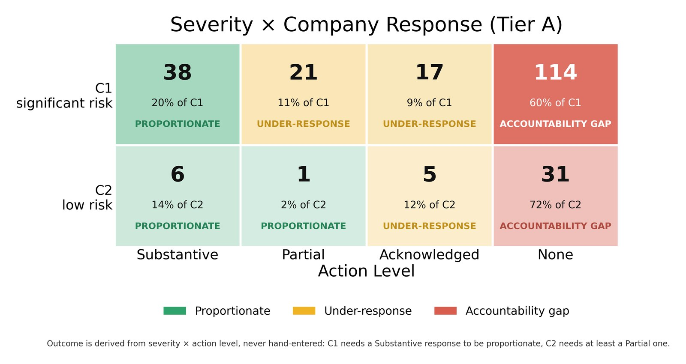
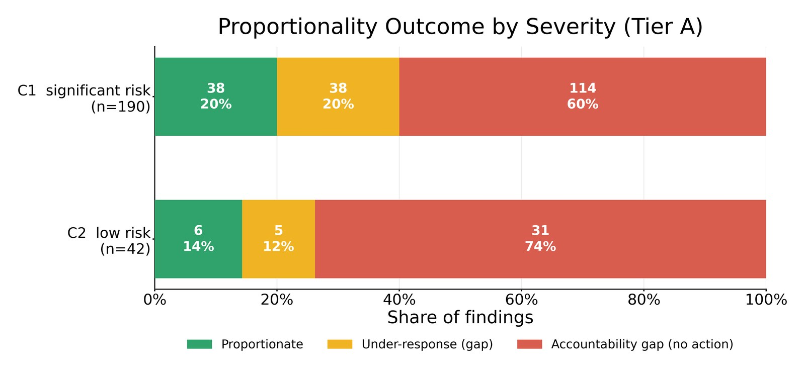
Full methodology — all eight domains defined, the tier test, and the five sources in order →
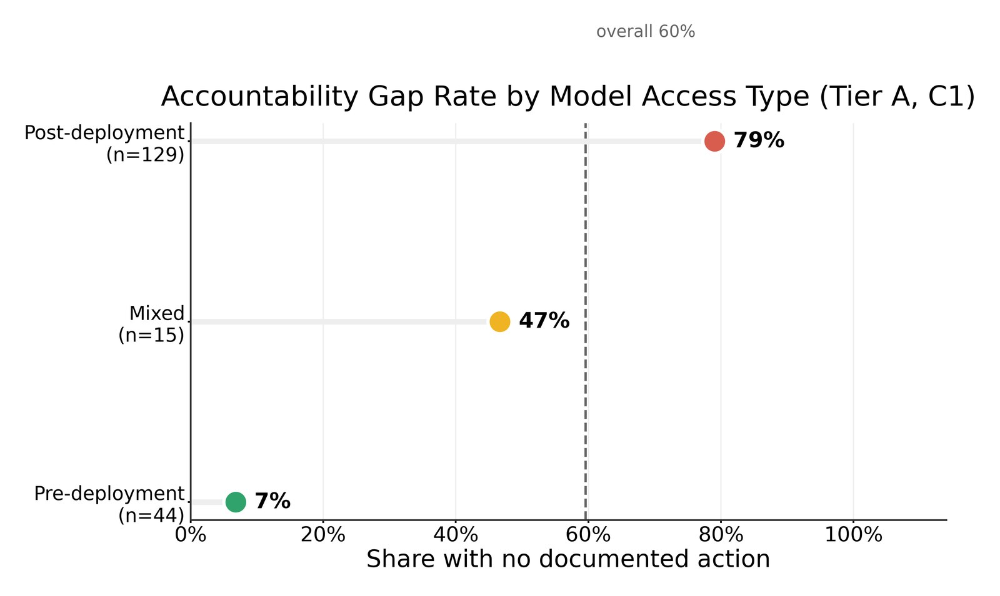
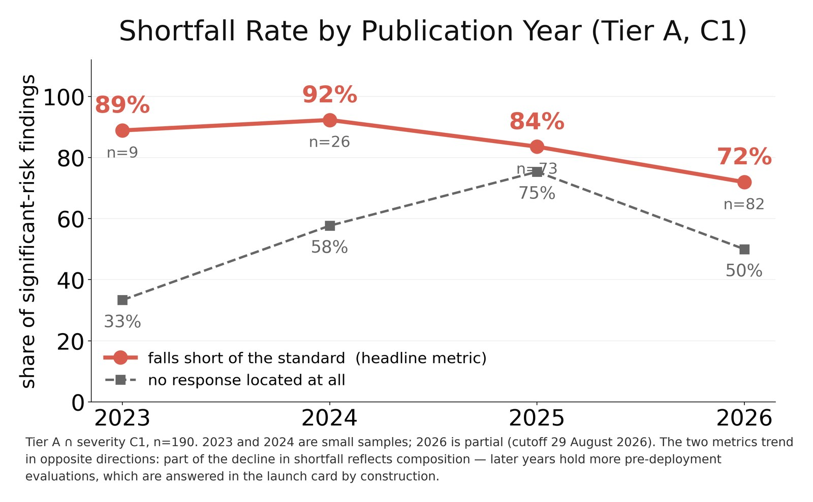
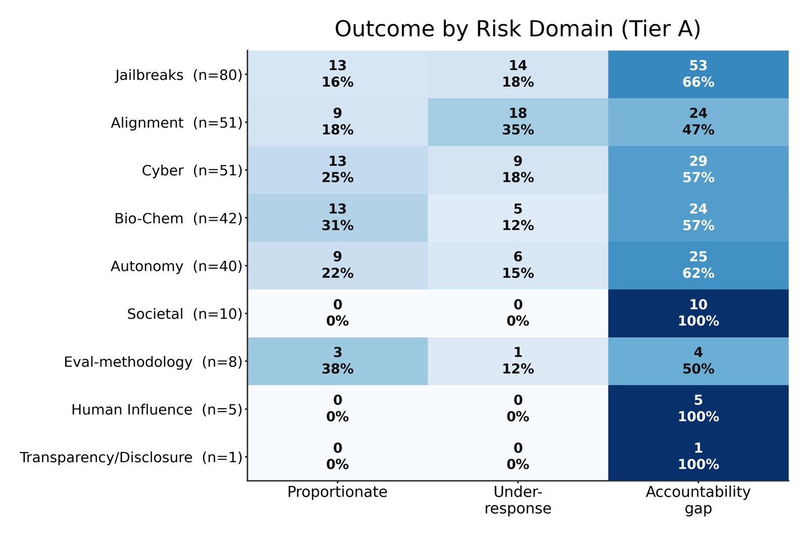
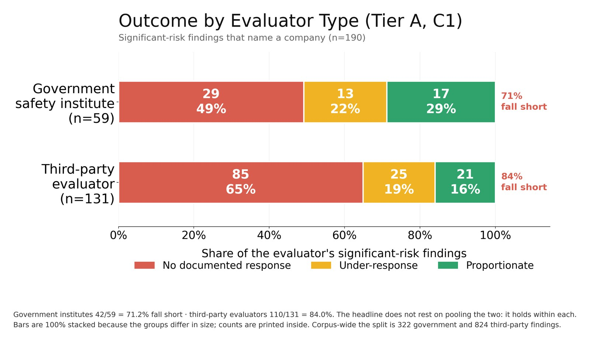
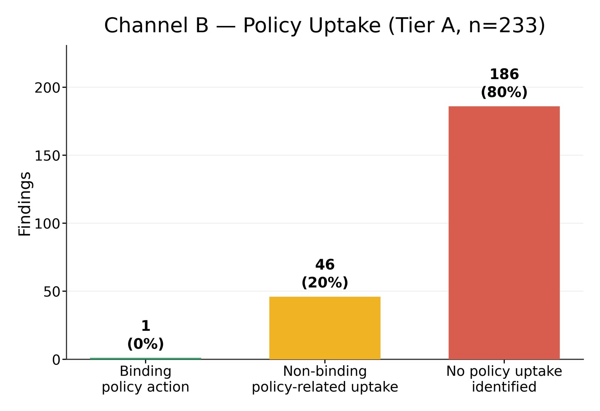
The problem
A great deal of attention goes to AI evaluations being published. Almost none goes to what happens next.
Publishing a finding is not the same as fixing it
Government safety institutes and third-party evaluators exist so that claims about frontier model safety do not rest on developer self-report. They test models, find problems, and publish. That is the first half of an accountability chain — and the half that gets measured.
The second half is whether anything follows. Nobody had measured, at corpus scale, whether a published finding about a named model produces a documented response from the company named in it.
Why the public channel
A company may act privately. But a regulator, journalist or researcher can only verify what is public. This dataset measures the record an outside observer can actually check — which is also the record that determines whether the evaluation ecosystem is visibly working.
What had to be pinned down first
Three things, before any number meant anything: what counts as a finding, when a response is genuinely owed, and what counts as a response. Each is defined in the methodology, and each exclusion exists to stop the corpus being quietly incomplete.
What this does not measure
- Private action. A fix made without public comment is invisible here, by construction.
- Effect. A substantive response means a specific documented change was published — not that it worked.
- Recency. Findings published near the cutoff may not have had time to draw a response. Outcomes are reported by year so this stays visible.
Methodology
The outcome for each finding is derived, never judged. Two coded columns decide whether a response is owed, an ensemble decides how serious it is, a fixed search decides whether a response exists — and the verdict is a formula over those inputs.
Three tests, all of which must hold
- Asserted by the evaluator — not a summary of someone else's work, not a comparator score cited in passing.
- Evidence-backed in that report — a measured result, an observed behaviour, or a documented process fact. Opinions, recommendations and plans are not findings.
- Independently codeable — it would warrant its own response on its own terms.
What is deliberately excluded
- Company self-reports. A developer writing about its own models has nobody to respond to. One exception is load-bearing: where a named external evaluator contributes a section to a company system card, that section is in scope and is filed under the evaluator, never the company.
- Ordinary accuracy and hallucination. That literature is enormous and was never censused here, so admitting a slice of it would make the corpus incomplete by its own standard.
- Non-frontier subjects. The finding must concern a named frontier model or AI system, not general machine learning.
- Unverifiable sources. Every number and quote is checked against the document it cites.
Every finding sits in exactly one tier
The tier is not a label anyone writes. It is derived from two coded
columns, Eval? (trackable) and Action Trackable?, so it can
never drift from the evidence that produced it.
| Tier | Encoding | Meaning |
|---|---|---|
| A | yes / yes | Accountability-relevant. Names a company or model, concerning, and a response is reasonable to expect. The only tier scored for proportionality — every headline number is computed over Tier A. |
| B | yes / no | Concerning, but no accountable party. Anonymised models, methodology findings, reassuring nulls, non-frontier subjects, capability trends. |
| C | no / blank | Not an empirical model finding. Methodology, framework, governance or milestone work. |
The Tier A test — all three must hold
It is an empirical model finding — a measured result about behaviour, capability or safeguards.
It names a specific company or model. Company level suffices; "anonymised" fails.
It demonstrates a concerning result for which a specific company response is reasonable to expect.
What condition 3 deliberately excludes
- Reassuring nulls — a model measured below a threshold.
- Benchmark scores or relative uplift with no dangerous threshold crossed.
- Inconclusive results.
- Comparative rankings between models.
- Capability trends and forecasts.
- Findings where named models are the instrument of a methodology study, not its subject.
- Company self-classifications ("we treat this as High capability").
- Non-frontier models.
- Findings too recent to have plausibly drawn a response.
One finding per row
- Never shared
- Two different companies never share a row. A finding covering four models is split by developer.
- Clubbed
- Findings warranting the same response become one row. The test: did, or would, the company respond to them as one thing?
- Split
- Findings warranting distinct responses become separate rows — a capability result and a safeguard failure are not one item.
- Comparators
- Baselines and comparison models are never rows of their own.
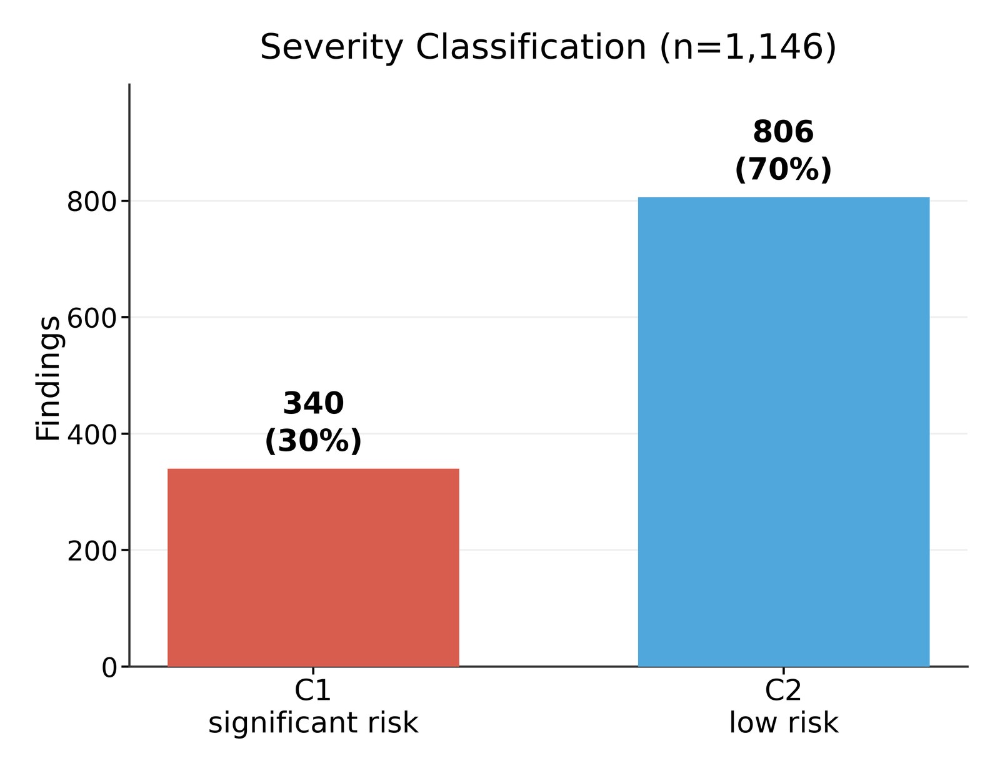
Two categories, and what separates them
- Category 1
- Significant risk. Triggered if any one of the eight dangerous-capability domains below is demonstrated in the evaluation described.
- Category 2
- Lower risk. Everything else — reassuring or null results (capability below an expert threshold, “no uplift”, “zero instances”); capability-gap findings where the model fails a task; positive methodology or tooling contributions; pure process or governance observations; and findings about non-frontier or small research models where no frontier system is implicated.
The eight domains
A finding is Category 1 if it demonstrates at least one. D1–D8 are this dataset’s own labels for them.
Meaningful uplift toward chemical, biological, radiological or nuclear weapons; expert-surpassing bio or chem capability; crossing a stated CBRN threshold.
Offensive cyber capability — expert-level or novel-uplift hacking, completing realistic multi-stage attack chains, high CTF or exploit success rates, or a “High” or above cyber designation.
Autonomous replication, self-propagation, or automating AI R&D and thereby accelerating scaling.
Systematically changing beliefs or behaviour at scale; implication in large-scale societal harm — mass CSAM, or election-scale persuasion exceeding a real benchmark.
Deliberate deception, scheming, sabotage, sandbagging, blackmail, or hiding of abilities or intentions.
A deployed safety mechanism — jailbreak defence, classifier, guardrail, refusal training, content filter — bypassed, defeated, or shown to fail, allowing harmful output on a frontier system.
The evaluation itself undermined — the model detected it was being evaluated, gamed the benchmark, was trained on evaluation data, or defeated or de-anonymised the evaluation environment.
A model actively encouraging, instructing or coaching a user toward suicide or self-harm. Category 1 regardless of scale — one user is enough. Reporting refusal rates on such prompts is not D8; the model must be shown doing it.
Four rules applied before any decision
- 1 · Negation
- “did not”, “below expert”, “zero instances”, “no uplift”, “remained below” → Category 2, even when the surrounding vocabulary is alarming.
- 2 · Demonstrated
- The capability must be shown in the evaluation described. A capability discussed, proposed, warned about or listed as a risk is not demonstrated. An alarming characterisation by the evaluator is not a demonstration.
- 3 · Trajectory
- A rising trend is Category 1 only if a dangerous capability was reached now. A pure future projection is Category 2.
- 4 · Deliberateness
- D5 requires evidence about the model — its own reasoning, an explicit plan, or concealment repeated across trials. Words like “faked” or “cheated” are the evaluator’s characterisation of an output, not evidence of intent.
How the score is produced
Three independent models — Claude Sonnet 5, GPT-5.5 and Gemini 3.1 — each score every finding against all eight domains, using one frozen prompt sent verbatim to all three. Majority vote decides. All three votes are stored and never overwritten, so a split decision stays visible in the data rather than collapsing into the majority.
The five places we look
The same five sources are checked for every finding in the accountability set, in this order. All five must be checked before a finding can be recorded as having no response, and the dated search log is what stands as evidence that they were.
- The company's newsroom and blog, searched for the evaluator and the model.
- The next model or system card for that family; for pre-deployment work, the launch card itself.
- Security and safety advisories, and product changelogs.
- Any company statement quoted directly inside the evaluator's own report.
- Company primary sources reachable from press coverage.
Four response levels
- Substantive — a specific, documented change, attributed to the finding.
- Partial — a change claimed but not verifiable, or incomplete.
- Acknowledged — the finding is referenced, but no action follows.
- None — nothing located after all five sources were checked.
Proportionality is the final verdict on each finding
Severity says how serious the finding is. Action Level says what the company did. Proportionality is the two combined — whether the response matched the risk. It is the only column the headline is computed from, and it is derived by lookup, never assigned by hand.
The lookup
| Severity | Response | Outcome |
|---|---|---|
| Significant risk | Substantive | Proportionate |
| Significant risk | Partial / Acknowledged | Under-response |
| Significant risk | None | Accountability gap |
| Lower risk | Substantive / Partial | Proportionate |
| Lower risk | Acknowledged | Under-response |
| Lower risk | None | Accountability gap |
The data
Every row carries its source, its coded fields and the reasoning behind its tier.
| Date | Institution | Finding | Models | Severity | Response |
|---|
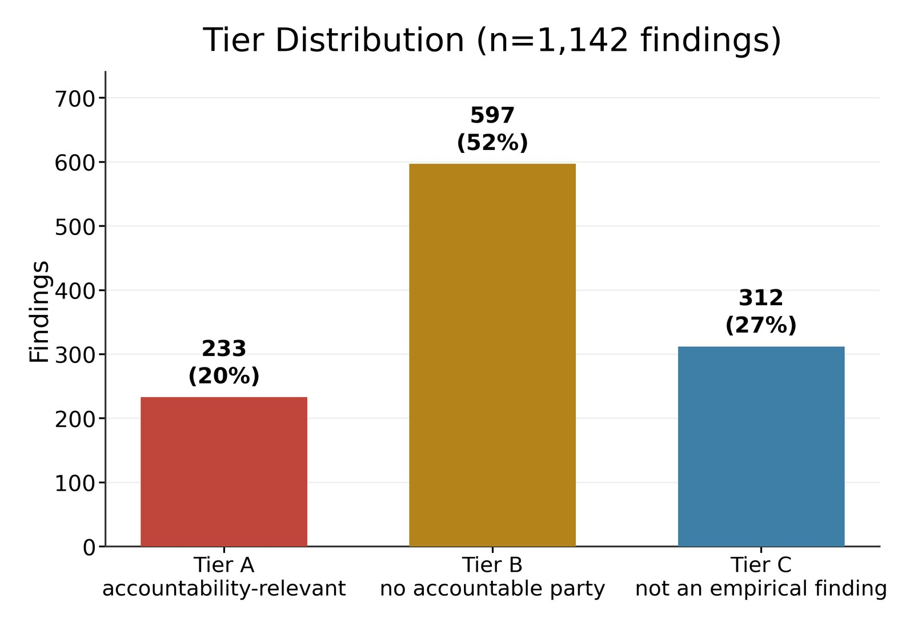
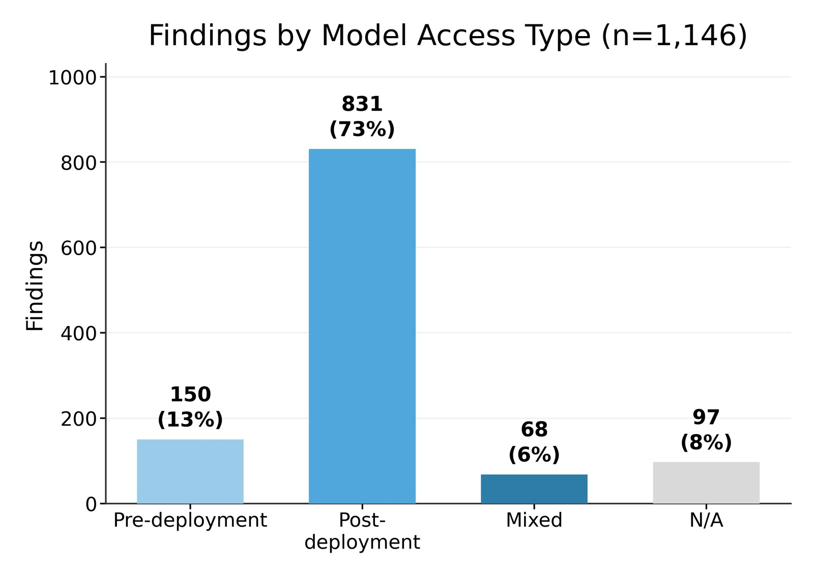
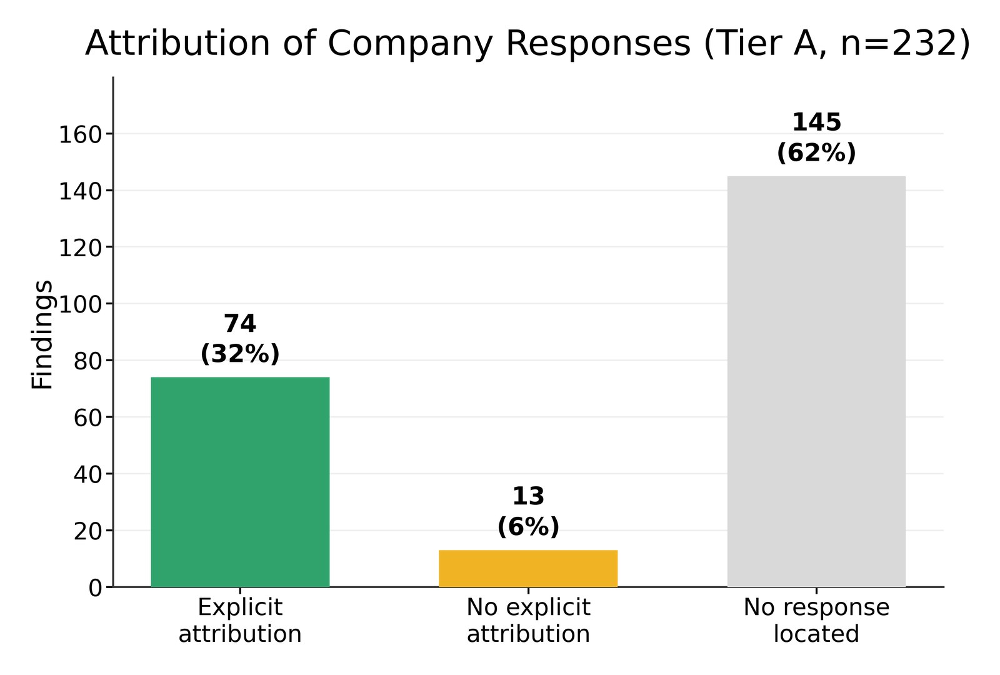